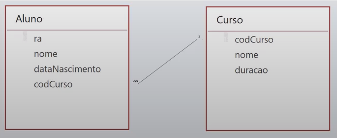

📝 Relacionamento entre Tabelas
Relacionar tabelas é quando um atributo liga uma tabela a outra por meio de uma chave estrangeira.
Cada linha de dados em uma tabela deve ser identificada usando a chave primária.
Portanto relacionamos a chave estrangeira de uma tabela com a chave primária de outra tabela para efetuar o relacionamento.

Cardinalidade
É o número máximo e mínimo de ocorrências de uma entidade que está associada a outra entidade que faz parte do relacionamento, ajudando a definir o número de ocorrências de relacionamento.
- Cardinalidade Máxima: número máximo de ocorrências(N) de um relacionamento. Classificando os relacionamentos de 1:1, 1:n, n:n.
- No relacionamento 1:1 cada registro de uma tabela X pode ter apenas um registro na tabela Y e vice-versa. É muito incomum.
- No relacionamento 1:n cada registro de uma tabela X tem um registro em uma tabela Y, porém um registro na tabela Y pode ter diversos na tabela X.
- No relacionamento n:n um registro na tabela X pode ter vários registros na tabela Y e vice-versa.
- Cardinalidade Mínima: expressa o número mínimo de ocorrências de outra entidade.
- Cardinalidade Mínima 1(associação obrigatória): deve existir um relaionamento que uma ocorrência se relacione no mínimo uma vez. Notação: (1,x)
- Cardinalidade Mínima 0(associação opcional): não é necessário que uma ocorrência se relacione. Notação: (0,x)